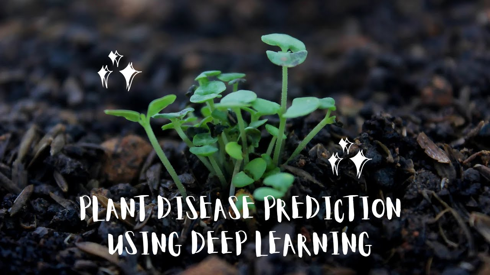
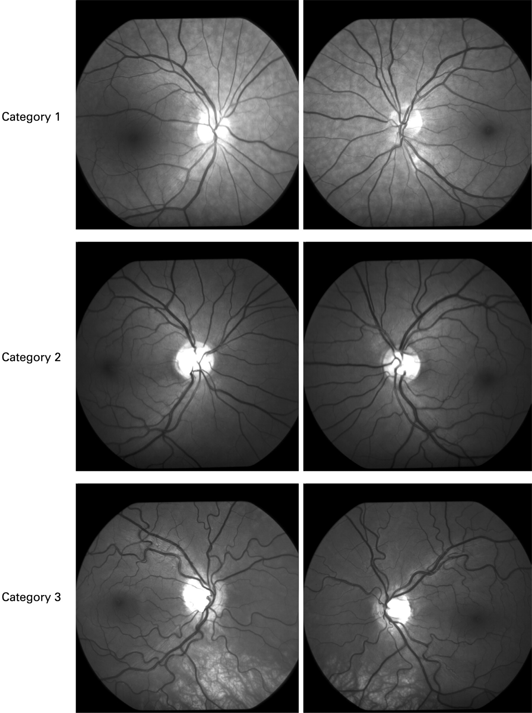

Projects

Plant Disease Prediction using DL
A deep learning model that detects and classifies plant diseases from images with high accuracy.
View Code

Retinal Vessel Segmentation
An optimized U-Net model for segmenting retinal blood vessels with 94% accuracy.
View Code
Brain Tumor Segmentation
A U-Net based model for precise segmentation of brain tumors in medical images, achieving 93% accuracy.
View CodeFake News Classification & Prediction using NLP
An NLP-based system designed to classify and predict fake news with robust accuracy.
View Code
Cervical Cancer Prediction
A machine learning solution for predicting cervical cancer risk based on clinical data.
View Code